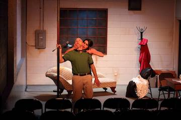

News and Reviews
The Liminal Playhouse
June 4, 2019
Eli Keel’s review of Edward Albee’s The Goat in Insider Louisville
June 1, 2019
Keith Wait’s review of Edward Albee’s The Goat in Arts-Louisville
April 3, 2019
Marty Rosen’s review of Smart People in LEO Weekly
March 29, 2019
Keith Waits’ review of Smart People in Arts-Louisville
March 20, 2019
The Liminal Playhouse Announces 2019—2020 Season
October 31, 2018
Alex Roma’s review of The Effect in LEO Weekly
October 26, 2018
Keith Waits’ review of The Effect in Arts-Louisville
September 5, 2018
Alex Roma’s review of Mr. Universe in LEO Weekly
August 31, 2018
Kate Barry’s review of Mr. Universe in Arts-Louisville
May 30, 2018
Marty Rosen’s review of The Fastest Clock in the Universe in LEO Weekly
May 25, 2018
Keith Waits’ review of The Fastest Clock in the Universe in Arts-Louisville
May 25, 2018
Eli Keel’s review of The Fastest Clock in the Universe in Insider Louisville
March 25, 2018
The Liminal Playhouse Announces 2018—2019 Season
April 4, 2018
Marty Rosen’s review of Sex with Strangers in LEO Weekly
March 31, 2018
Eli Keel’s review of Sex with Strangers at WFPL
March 30, 2018
Leila Toba’s review of Sex with Strangers in Arts-Louisville
Marty Rosen’s review of Clybourne Park in LEO Weekly
October 28, 2017
Keith Waits’ review of Clybourne Park in Arts-Louisville
October 26, 2017
Eli Keel’s preview of Clybourne Park in Insider Louisville
September 6, 2017
Marty Rosen’s review of Hir in LEO Weekly
September 6, 2017
Eli Keel’s review of Hir in Insider Louisville
September 1, 2017
Keith Waits’ review of Hir in Arts-Louisville
August 30, 2017
Liminal Playhouse, ‘comedy with serious intent’
April 5, 2017
Marty Rosen’s review of Time Stands Still in LEO Weekly
April 1, 2017
Liminal 2017—18 Season Announcement in Arts-Louisville
March 29, 2017 Hir, Clybourne Park, Sex with Strangers and More Set for The Liminal Playhouse's 2017-18 Season
March 28, 2017
Eli Keel’s review of Time Stands Still
in Insider Louisville
March 27, 2017
Keith Waits’ review of Time Stands Still
at BroadwayWorld
March 24, 2017
Keith Waits’ review of Time Stands Still
in Arts-Louisville
March 15, 2017
Elizabeth Kramer’s preview of Time Stands Still in The Courier-Journal
January 21, 2017
BWW Feature: Louisville Theatres Join ‘Ghost Light’ Project
January 20, 2017
Long As I Can See The Light
November 16, 2016
Marty Rosen’s review of Venus in Fur in LEO Weekly
November 12, 2016
Kate Barry’s review of Venus in Fur in Arts-Louisville
November 10, 2016
Elizabeth Kramer’s preview of Venus in Fur
in The Courier-Journal
November 7, 2016
Eli Keel’s preview of Venus in Fur in Insider Louisville
October 23, 2016
The Liminal Playhouse to present Venus in Fur
September 7, 2016
Marty Rosen’s review of The Nether in LEO Weekly
September 4, 2016
Ben Gierhart’s review of The Nether in Arts-Louisville
September 2, 2016
Eli Keel’s preview of The Nether in Insider Louisville
September 1, 2016
The Liminal Playhouse to open 2016—2017 with The Nether
August 24, 2016
Elizabeth Kramer’s preview of The Nether in The Courier-Journal
March 27, 2016
Keith Waits’ review of Melancholy Play in Arts-Louisville
March 25, 2016
Weekend Arts Roundup: An Embarrassment of Riches
March 22, 2016
Eli Keel’s preview of Melancholy Play
in Insider Louisville
March 22, 2016
The Liminal Playhouse sets 2016—2017 Season
March 16, 2016
Elizabeth Kramer’s preview of Melancholy Play in
The Courier-Journal
March 7, 2016
The Liminal Playhouse to stage Sarah Ruhl’s Melancholy Play
March 2, 2016
Derby Dinner’s Into the Woods and three plays by Sarah Ruhl
September 6, 2015
Keith Waits’ review of Christmas on Mars
in Arts-Louisville
September 2, 2015
Brian Kennedy’s preview of Christmas on Mars
August 31, 2015
Eli Keel’s preview of our inaugural season in Insider Louisville
August 29, 2015
Elizabeth Kramer’s preview of Christmas on Mars in The Courier-Journal
August 24, 2015
Keith Waits’ preview of our inaugural season in Arts-Louisville
Christmas on Mars to launch The Liminal Playhouse’s 2015—2016 Season
